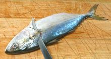
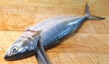
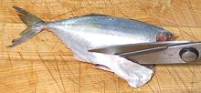
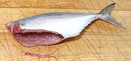
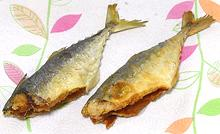
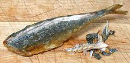

This is a highly commercial Indo-West Pacific mackerel found from the Red Sea and Madagascar to Samoa, these fish can grow to over 13 inches, but photo specimen was 9 inches and weighed 5-1/4 ounces. This fish is not considered threatened and is sold fresh, frozen, canned, dried-salted, smoked and made into fish sauce. It has just enough scales to be kosher.
More on the Mackerel Family.
|






Serve whole or . . .
|
This is a fairly meaty fish with fairly light flesh that is milder than most mackerel, but definitely could not be called "fish lite". There is a substantial streak of dark meat under the skin along the lateral line. The flesh stays firm for all methods of cooking but breaks up easily on the plate into large flakes. My favorite way to enjoy these is to fry them with a light powdering of rice flour and eat with a simple sauce. The flavor of the flesh works well fried. Small bony fish like this take a little special handling to be easily edible and not take too much time to prepare. The instructions below will produce good results with minimum effort. They will also work with other small bony fish. Buying:This fish is particularly available from Philippine markets, both on ice and dried, and from other Asian markets serving a Southeast Asian community. From the ice, I have paid 2014 US $1.99 / pound. Frozen 4 to a bag from a large Asian market in Los Angeles (San Gabriel), I paid 2017 US $1.35 / pound.Scales:As with most mackerels, this one has only a few scales right behind the gill covers, just enough to be kosher. They scrape off easily.Clean:Nothing unusual here. You won't be using the heads, so no need to pull the gills.Skin:As with other mackerels, the skin is too thin and delicate to remove. Leave it on for all methods of cooking. It's flavor is stronger than the light flesh, but milder than the dark. It has no significant shrink during cooking.Fillet:These fish fillet quite easily. The ribs just pull right out of the flesh. There will be tiny centerline pin bones for 2/3 of the length, which are easy to find and very easy to remove with long nose pliers, several at a time. In smaller fish that are to be fried, they will probably just disappear.Yield:A 10-1/2 inch fish weighing 8-1/4 ounces uncleaned yielded 4 ounces of skin-on fillet (48%). Smaller fish don't yield a lot less.Method:
Stock:The heads, bones and fins of this fish are a bit too strongly flavored to make a good stock. Discard them. |